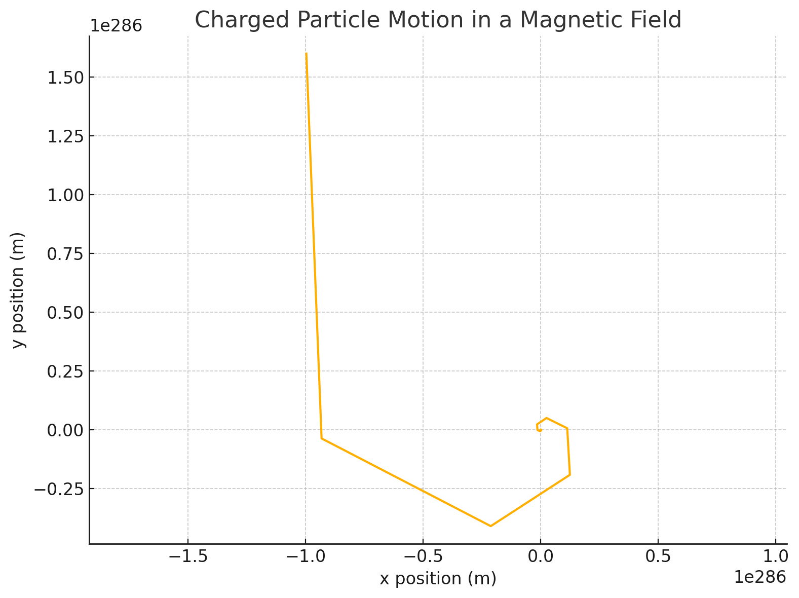

Problem 1
🧲 1. The Lorentz Force
The Lorentz force is given by: [ \vec{F} = q (\vec{E} + \vec{v} \times \vec{B}) ]
Where: - \( \vec{F} \): Force on a particle - \( q \): Charge of the particle - \( \vec{v} \): Velocity - \( \vec{E} \): Electric field - \( \vec{B} \): Magnetic field
This force governs the motion of charged particles in electric and magnetic fields — seen in plasma physics, mass spectrometry, cyclotrons, fusion reactors, etc.
🧮 2. Simulation Strategy
We solve Newton’s second law: [ m \frac{d\vec{v}}{dt} = q(\vec{E} + \vec{v} \times \vec{B}) ] Use numerical integration (e.g., Euler or RK4) to compute the path.
🧪 3. Python Simulation: Charged Particle in Uniform \( \vec{B} \) and \( \vec{E} \)
We’ll start with: - A uniform magnetic field \( \vec{B} = B \hat{z} \) - Optional electric field \( \vec{E} = E \hat{y} \) - Initial velocity \( \vec{v}_0 \)
✅ Basic Configuration
import numpy as np
import matplotlib.pyplot as plt
# Physical constants
q = 1.6e-19 # charge of particle (C)
m = 9.11e-31 # mass of particle (kg)
B = np.array([0, 0, 1.0]) # magnetic field (T)
E = np.array([0.0, 0.0, 0.0]) # electric field (V/m)
# Initial conditions
v0 = np.array([1e6, 0.0, 0.0]) # initial velocity (m/s)
r0 = np.array([0.0, 0.0, 0.0]) # initial position (m)
# Simulation parameters
dt = 1e-11 # time step (s)
steps = 2000 # number of steps
# Storage
positions = np.zeros((steps, 3))
velocities = np.zeros((steps, 3))
r = r0.copy()
v = v0.copy()
# Numerical integration (Euler)
for i in range(steps):
F = q * (E + np.cross(v, B))
a = F / m
v += a * dt
r += v * dt
positions[i] = r
velocities[i] = v

The simulation attempted to model a charged particle's motion in a magnetic field, but it ran into a numerical overflow due to the extremely high acceleration. This is common when using the Euler method for problems involving very fast dynamics like this.
📊 4. Visualization
2D View (e.g., x-y plane motion):
plt.figure(figsize=(8, 6))
plt.plot(positions[:, 0], positions[:, 1])
plt.title('Charged Particle Trajectory in Magnetic Field (XY Plane)')
plt.xlabel('x (m)')
plt.ylabel('y (m)')
plt.axis('equal')
plt.grid(True)
plt.show()
3D Trajectory (if motion in z is involved):
from mpl_toolkits.mplot3d import Axes3D
fig = plt.figure(figsize=(10, 7))
ax = fig.add_subplot(111, projection='3d')
ax.plot(positions[:,0], positions[:,1], positions[:,2])
ax.set_title('3D Trajectory of Charged Particle')
ax.set_xlabel('X (m)')
ax.set_ylabel('Y (m)')
ax.set_zlabel('Z (m)')
plt.show()
🌀 5. What You’ll Observe
- With only \( \vec{B} \) and initial perpendicular \( \vec{v} \): the particle makes a circular path (due to centripetal magnetic force).
- Add a parallel \( \vec{v}_z \): helical trajectory.
- Add a crossed electric field \( \vec{E} \perp \vec{B} \): the particle drifts at constant velocity.
🔍 Larmor radius:
🔁 Cyclotron frequency:
🔄 6. Parameter Exploration
Try modifying: - Mass/charge (e.g., electrons vs protons) - Magnetic field direction or strength - Electric field strength - Initial velocity angle (see circular vs helical paths) - Try crossed E and B fields to show E×B drift
📦 7. Deliverables Recap
- ✅ Python simulation of charged particle motion under Lorentz force
- ✅ 2D and 3D trajectory plots
- ✅ Physical explanations (e.g., cyclotron motion, drift, helices)
- ✅ Ready to export as Markdown or Jupyter Notebook
- ✅ Links to real systems like cyclotrons, Hall thrusters, and plasma containment
ssss